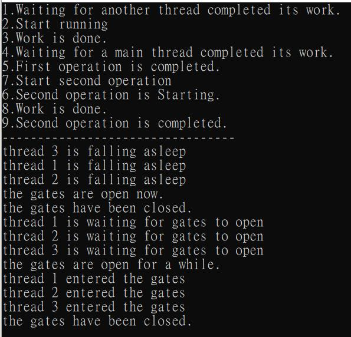

一、基本範例
using System;
using System.Threading;
namespace ConsoleApp1
{
class Program
{
private static int counter { get; set; }
static void Main(string[] args)
{
Timer t = new Timer(DisplayTimeEvent, null, 0, 3000);
Console.ReadKey();
}
private static void DisplayTimeEvent(Object o)
{
Console.WriteLine("Hello " + counter);
counter++;
}
}
}
二、進階範例
using System;
using System.Threading;
namespace test
{
class Program
{
static void Main(string[] args)
{
AutoResetEvent AutoResetEvent = new AutoResetEvent(false);
StatusChecker statusChecker = new StatusChecker(5);
TimerCallback TimerCallback = statusChecker.CheckStatus;
Console.WriteLine("{0} start time , before wait for three ", DateTime.Now.ToString("h:mm:ss.fff"));
Console.WriteLine("--1--");
//AutoResetEvent為TimerCallback的輸入委派參數
Timer Timer = new Timer(TimerCallback, AutoResetEvent, 3000, 1000);//延遲三秒後開始每一秒觸發
AutoResetEvent.WaitOne();//hold住目前執行緒(Timer)，直到目前的執行緒(Timer)同意(AutoResetEvent.Set();)上一層執行緒也可執行為止
Console.WriteLine("--2--");
Console.WriteLine("--3--");
Timer.Change(5000, 2000);//改變Timer觸發方式，改成延遲5秒後開始每2秒觸發
AutoResetEvent.WaitOne();
Console.WriteLine("--4--");
Timer.Dispose();
Console.WriteLine("\nDestroying timer.");
Console.ReadKey();
}
}
class StatusChecker
{
private int invokeCount;
private int maxCount;
public StatusChecker(int count)
{
invokeCount = 0;
maxCount = count;
}
// This method is called by the timer delegate.
public void CheckStatus(Object stateInfo)
{
AutoResetEvent autoEvent = (AutoResetEvent)stateInfo;
Console.WriteLine("{0} Checking status {1,2}.",
DateTime.Now.ToString("h:mm:ss.fff"),
(++invokeCount).ToString());
if (invokeCount == maxCount)
{
// Reset the counter and signal Main.
invokeCount = 0;
autoEvent.Set();//執行WaitOne執行緒(讓等候的WaitOne執行緒繼續執行)
}
}
}
}
說明：
1、AutoResetEvent：
AutoResetEvent(true) 代表處於已收到信號的狀態，表示當前執行緒會被放行，
例如：當使用了 AutoResetEvent.WaitOne(); 時，則當前執行緒不會等待，不會讓其他 n 個執行緒先執行，
但此時 AutoResetEvent 的狀態已變成未收到信號(非信號)狀態了，
也就是說，再次執行 AutoResetEvent.WaitOne(); 時，將會暫停當前的執行緒；
AutoResetEvent(false) 代表處於未收到信號(非信號)狀態，表示會暫停當前的執行緒，
例如：當使用執行 AutoResetEvent.WaitOne(); 時，則當前執行緒會等待，會讓其他 n 個執行緒先執行，
直到呼叫 AutoResetEvent.Set(); 為止。
2、TimerCallback：委派可用來指定 Timer 呼叫的方法。
三、noteofisabella 範例
來自網友 noteofisabella 的文章，個人認為有助於理解 AutoResetEvent 的用法。
using System;
using System.Threading;
namespace ConsoleApp1
{
class Program
{
private static AutoResetEvent _guard1Event = new AutoResetEvent(false);
private static AutoResetEvent _guard2Event = new AutoResetEvent(false);
private static ManualResetEvent _gateEvent = new ManualResetEvent(false);
static void Main(string[] args)
{
/** *******************
* Thread的AutoResetEvent機制
* ********************/
var t = new Thread(() => Process(10));
t.Start();
Console.WriteLine("1.Waiting for another thread completed its work.");
//等待通行信號
_guard2Event.WaitOne();
Console.WriteLine("5.First operation is completed.");
Thread.Sleep(TimeSpan.FromSeconds(5));
//發送信號通知正在等待的Thread工作已經完成
_guard1Event.Set();
Console.WriteLine("6.Second operation is Starting.");
//等待通行信號
_guard2Event.WaitOne();
Console.WriteLine("9.Second operation is completed.");
Console.ReadKey();
Console.WriteLine("---------------------------------");
/** *******************
* Thread的ManualResetEvent機制
* ********************/
var t1 = new Thread(() => TravelThroughGates("thread 1", 5));
var t2 = new Thread(() => TravelThroughGates("thread 2", 7));
var t3 = new Thread(() => TravelThroughGates("thread 3", 9));
t1.Start();
t2.Start();
t3.Start();
Thread.Sleep(TimeSpan.FromSeconds(5));
Console.WriteLine($"the gates are open now.");
_gateEvent.Set();
Console.WriteLine($"the gates have been closed.");
_gateEvent.Reset();
Thread.Sleep(TimeSpan.FromSeconds(5));
Console.WriteLine($"the gates are open for a while.");
_gateEvent.Set();
Thread.Sleep(TimeSpan.FromSeconds(2));
Console.WriteLine($"the gates have been closed.");
_gateEvent.Reset();
Console.ReadKey();
}
static void Process(int seconds)
{
Console.WriteLine("2.Start running");
Thread.Sleep(TimeSpan.FromSeconds(seconds));
Console.WriteLine("3.Work is done.");
//發送信號通知可通行
_guard2Event.Set();
Console.WriteLine("4.Waiting for a main thread completed its work.");
//等待信號主程序給通行信號
_guard1Event.WaitOne();
Console.WriteLine("7.Start second operation");
Thread.Sleep(TimeSpan.FromSeconds(seconds));
Console.WriteLine("8.Work is done.");
_guard2Event.Set();
}
static void TravelThroughGates(string threadName, int seconds)
{
Console.WriteLine($"{threadName} is falling asleep");
//開放通行
_gateEvent.Set();
Thread.Sleep(TimeSpan.FromSeconds(seconds));
Console.WriteLine($"{threadName} is waiting for gates to open");
//等待通行信號
_gateEvent.WaitOne();
Console.WriteLine($"{threadName} entered the gates");
}
}
}
執行畫面

參考資料：